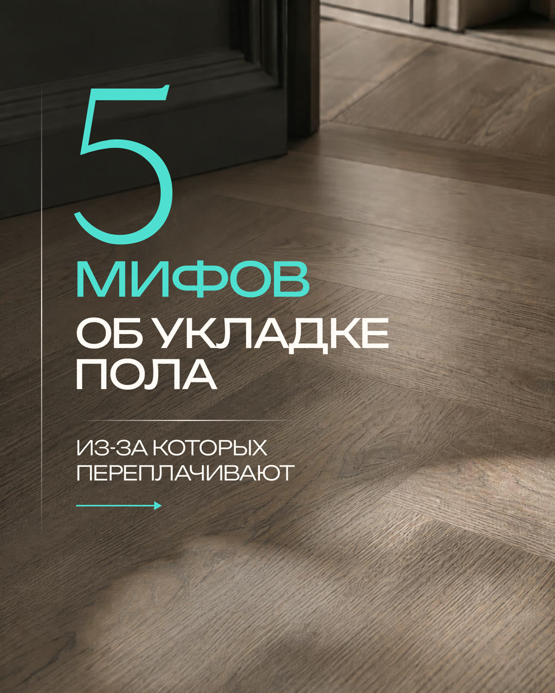
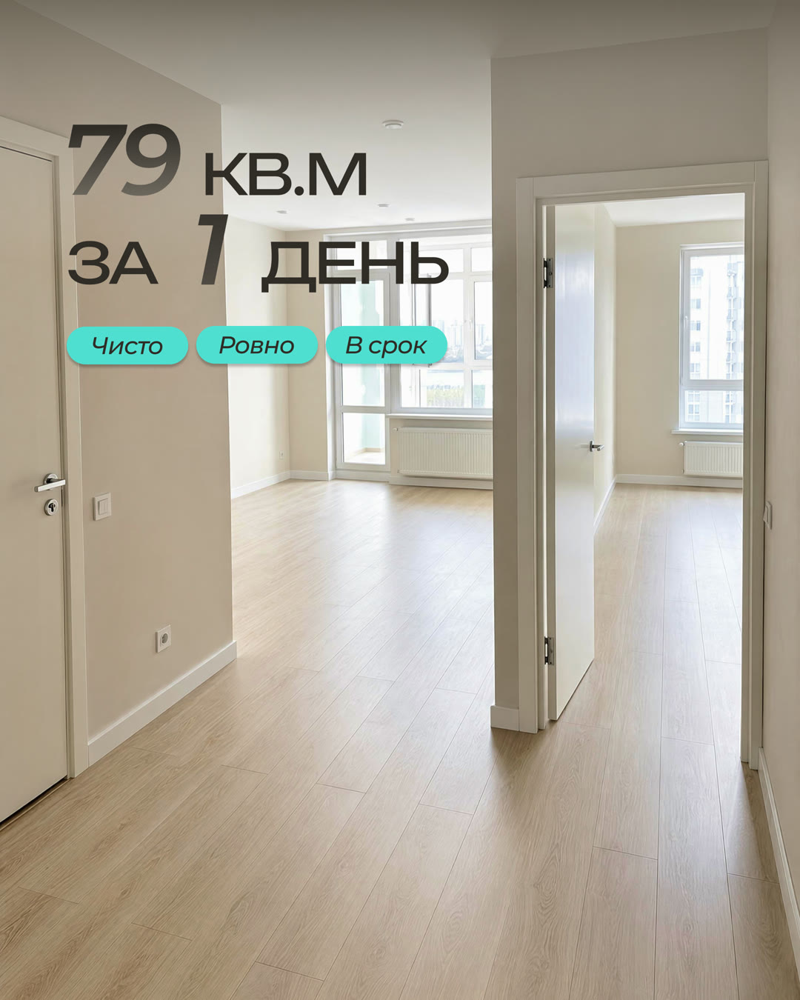
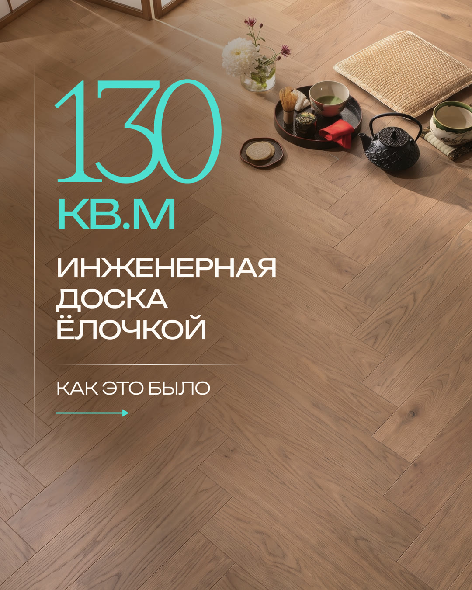

Напольные покрытия · Екатеринбург · контент для VK
Как превратить укладку пола из «ещё одной услуги» в понятный выбор мастера
Для МастерПол собрали контент-месяц, который показывает реальные работы, объясняет сложное простыми словами, снимает сомнения о цене и ведёт к замеру.
Контент‑план и визуал утверждены. Материалы загружены черновиками во ВКонтакте.



Маркетинговая задача
Показать не красивый пол, а причины доверить работу именно этой команде
Человек редко понимает качество укладки до начала работ. Поэтому профиль должен заранее объяснить выбор материала, показать процесс, снять страх переплаты и дать понятный следующий шаг.
Что спрашивает заказчик
«А как понять, что мне сделают хорошо?»
Какой материал выбрать?
Почему ёлочка дороже?
Откуда низкая цена?
Как принять готовый пол?
Сколько займёт работа?
Что покажет замер?
Что делает контент
Даёт доказательства до первого звонка
Вместо общих обещаний — реальные объекты, детали технологии, чек-листы и разбор возражений. Коммерческое предложение появляется только после того, как человек понял подход команды.
Логика месяца
Пять ролей контента — по две публикации на каждую
Лента не превращается ни в каталог объектов, ни в учебник. Доказательства, польза, отстройка, процесс и предложения работают вместе.
Помочь выбрать
Сравнить материалы и показать точки контроля готовой работы.
Показать объекты
Разобрать два проекта через площадь, срок и особенности укладки.
Разобрать мифы
Объяснить цену, технологию и причины разницы в стоимости.
Показать контроль
Рассказать, как команда добивается аккуратных стыков и планирует работу.
Позвать на замер
Сделать понятное предложение после полезной части месяца.
Наши работы
Объекты с конкретными условиями и результатом.
Полезные
Выбор материала и чек-лист приёмки пола.
Мифы и цена
Спокойные ответы на сомнения без давления.
Процесс
Контроль качества и логика работы команды.
Предложения
Замер и бронирование удобного срока.
Продукт целиком
Не три красивых картинки, а весь готовый контент-месяц
Все 10 тем, все обложки, 14 слайдов каруселей и серия из пяти историй. Любой макет можно открыть крупно.
Маркетинговая архитектура
10 тем с отдельной задачей
Контент ведёт от выбора и доказательств к снятию возражений, замеру и бронированию срока.
Единая визуальная система
Все 10 обложек формата 4:5
Тёплая палитра дерева, фотографии объектов и бирюзовые акценты делают ленту узнаваемой, но не шаблонной.
2 карусели · 14 слайдов
Мифы и реальные работы раскрыты по шагам
Листайте стрелками или выбирайте миниатюры. Каждый слайд можно увеличить.
Мини-прогрев из пяти кадров
От вопроса о цене — к честному замеру
Истории объясняют, почему стоимость зависит от основания, и подводят к публикации о замере без повторения поста.
Готовый комплект
Состав и форматы материалов
В комплекте — 27 файлов для ленты и вертикального просмотра.
финальных файлов
8 одиночных макетов, 14 слайдов двух каруселей и 5 сторис.
готовые форматы
Публикации подготовлены под ленту, истории — под вертикальный просмотр.
визуалы найдены
Комплект утверждён и загружен во ВКонтакте черновиками.
Как шёл проект
От маркетинговой логики до готовых черновиков во ВКонтакте
В кейсе виден не только дизайн. Сначала собрали систему тем и тексты, затем сделали визуал, согласовали комплект и подготовили его к публикационному периоду.
Контент-план
10 тем распределили между пользой, работами, возражениями, процессом и предложениями.
Тексты
Для каждой темы зафиксировали задачу, подачу и следующий шаг читателя.
Визуал
Подготовили 27 макетов: одиночные посты, две карусели и пять сторис.
Согласование
Клиент утвердил визуалы, после чего комплект перешёл к загрузке.
Черновики VK
10 публикаций и истории загрузили в проект; период запланировали с 28 июля по 15 августа.
Этап выпуска: материалы были загружены как черновики. Поэтому мы не называем запланированный период доказательством выхода каждого поста.
Продолжение работы
После первого комплекта клиент заказал ещё 10 публикаций
После первого цикла клиент продолжил работу с lemonmedia.
Повторный заказРезультат проекта
Сильный продукт видно и без придуманных цифр
На странице можно проверить сам результат работы lemonmedia: логику, темы, визуальную систему, все макеты и факт продолжения сотрудничества.
Что сделали
- 10 публикаций, включая две карусели;
- 14 слайдов каруселей и 5 сторис;
- 27 финальных изображений;
- утверждение визуала клиентом;
- загрузка комплекта черновиками во ВКонтакте;
- продление работы ещё на 10 публикаций.
Итог проекта
Кейс показывает утверждённый визуал и календарь черновиков ВКонтакте. Коммерческие показатели не измерялись.
Цены, сроки объектов и другие формулировки внутри макетов относятся к материалам клиента и не используются как результат работы lemonmedia.
Вашей услуге тоже нужно больше доверия?
Соберём контент-месяц, который отвечает на вопросы до разговора с менеджером
Маркетолог выстраивает план и тексты, дизайнер собирает визуал, менеджер ведёт согласование и публикацию. 10 постов — 4 990 ₽.